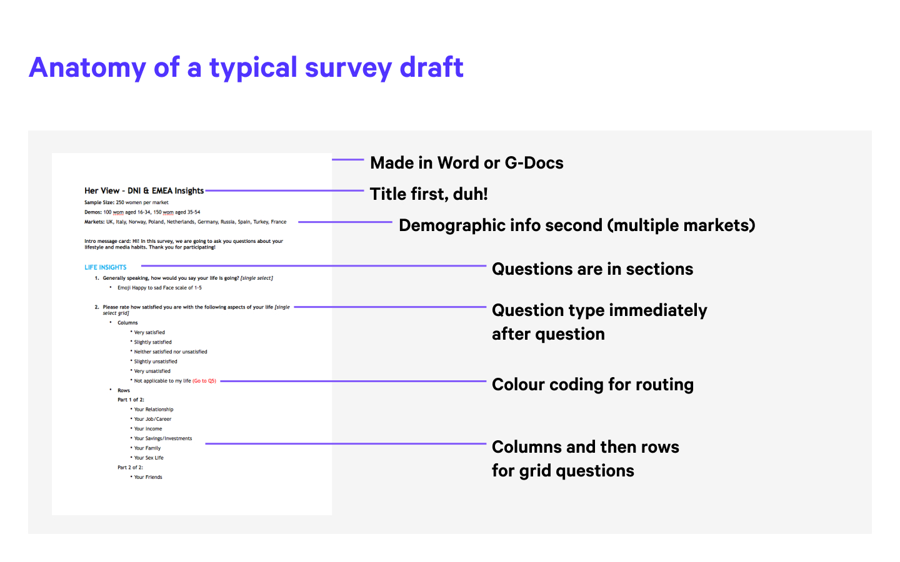
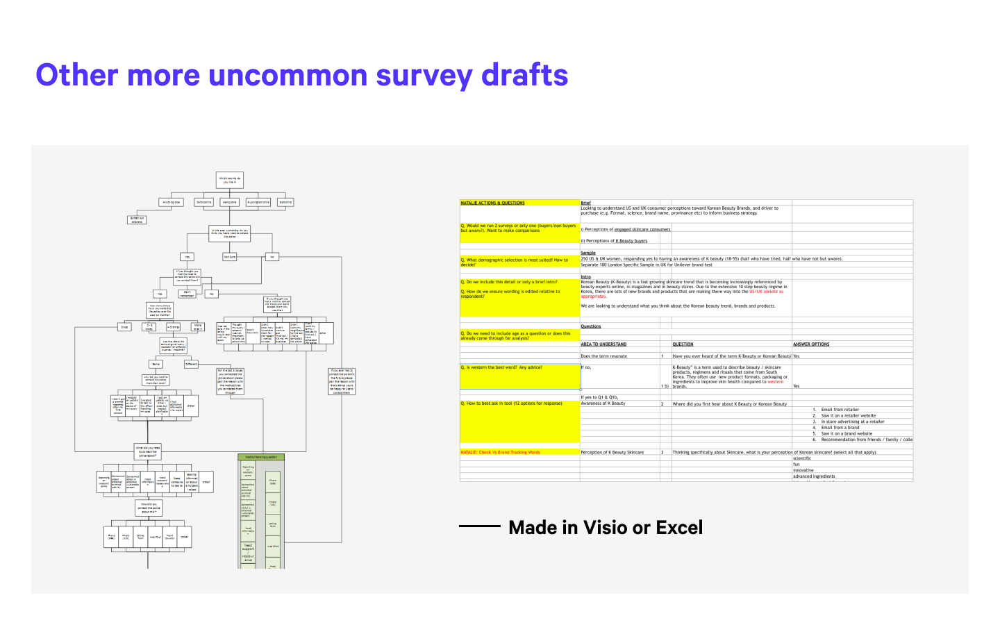
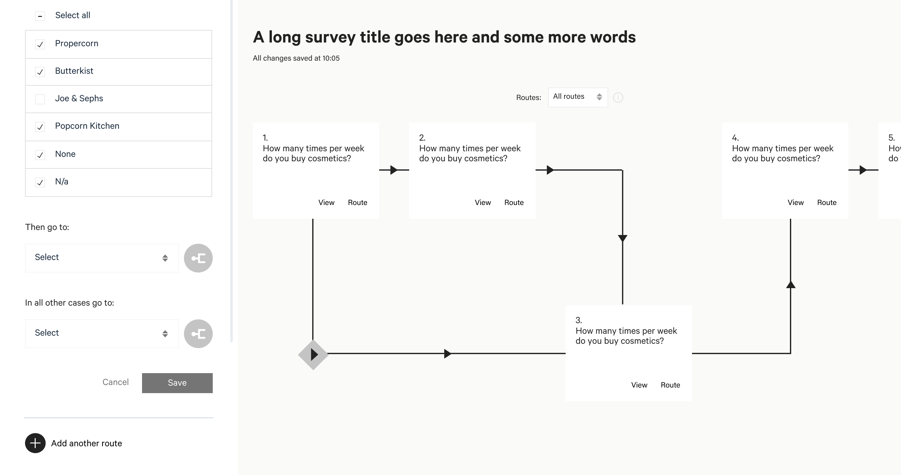
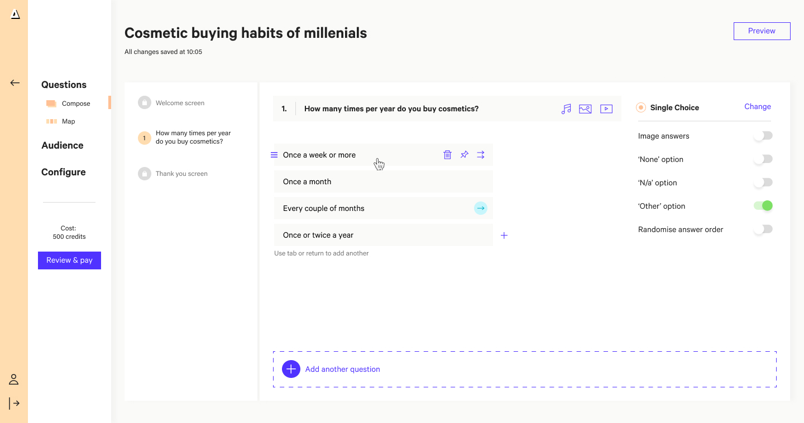

Attest was building traction as a B2B consumer research platform when design debt caught up with its core product. The survey creation flow had been extended month by month – each new capability had been grafted on, and the result was a flow that was disjointed and difficult to navigate.
I joined as a freelance Product Design Lead with two mandates: rebuild the survey creation experience from the research up, and build the design function from scratch alongside it. Over six months I hired three designers, established working processes, and delivered a redesigned core flow — one that could accommodate new capabilities far more gracefully.
I started with data. Session recordings from FullStory and activity data from Mixpanel showed a friction point just as people started to create a survey. Out top users were marketing (49%) and founders (28%) – people without deep fluency in survey methodology or the tooling itself.
However the most revealing insight didn't come from the analytics at all. It came from people's own survey drafts — I sourced these from clients directly. What emerged was a picture of three genuinely different cognitive approaches to the same task.


That shifted the design question entirely to a mental model problem. How do you design a single interface that works for people who are conceptualising the same task in fundamentally different ways?
I prototyped in Origami Studio — Facebook's recently released interaction design tool. The survey creation flow was complex and multimodal enough that static screens simply couldn't test it — users needed to actually move through the states, switch between modes, and experience the branching logic responding to their input.
The solution was two named views within a single flow. Compose was a linear, question-by-question editor — the mode that matched how most users naturally drafted a survey. Map was a structural diagram view, showing the full survey as a branching tree with each conditional path visible at once. Users could switch between them freely; the underlying data was consistent across both.


The two-mode approach — structural and linear — meant that the same tool worked for users with genuinely different cognitive models. New question types and routing logic could be introduced without refactoring the underlying interaction model. And by the end of the engagement I'd hired and onboarded three designers, leaving Attest with a team in place to own it.